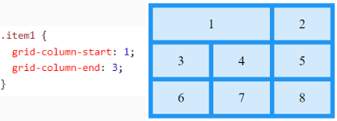
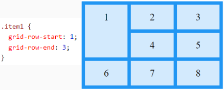
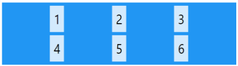
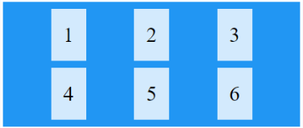
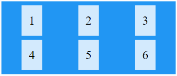
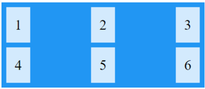
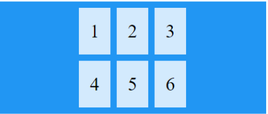

Coloque un elemento de cuadrícula en la línea de columna 1 y deje que termine en la línea de columna 3:

Coloque un elemento de cuadrícula en la línea de fila 1 y deje que termine en la línea de fila 3:

La justify-content propiedad se utiliza para alinear toda la cuadrícula dentro del contenedor.

justify-content:space-evely El valor "espacio uniformemente" dará a las columnas la misma cantidad de espacio entre ellas y alrededor de ellas:

justify-content:space-around El valor "espacio alrededor" le dará a las columnas la misma cantidad de espacio alrededor de ellas:

justify-content:space-between El valor "espacio entre" dará a las columnas la misma cantidad de espacio entre ellas:

justify-content:center El valor "centro" alineará la cuadrícula en el medio del contenedor:

justify-content:start El valor "inicio" alineará la cuadrícula al comienzo del contenedor:
justify-content:end El valor "fin" alineará la cuadrícula al final del contenedor:
La align-content propiedad se usa para alinear verticalmente toda la cuadrícula dentro del contenedor.
align-content: center; El valor "centro" alineará las filas en el medio del contenedor:
align-content: space-evenly; El valor "espacio uniforme" dará a las filas la misma cantidad de espacio entre ellas y alrededor de ellas:
align-content: space-around; El valor "espacio alrededor" le dará a las filas la misma cantidad de espacio alrededor de ellas:
align-content: space-between; El valor "espacio entre" dará a las filas la misma cantidad de espacio entre ellas:
align-content: start; El valor "inicio" alineará las filas al principio del contenedor:
align-content: end; El valor "fin" alineará las filas al final del contenedor: